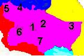
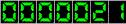

| Ir a anterior | Ir a principal |
DIRECCIÓN REGIONAL CENTRAL |
|
|  | Ing. Luis Fernando Meléndez
Corrales, Director Ing. Oscar Arguedas M., Unidad Ejecución Operativa Licda. Lidiette Chavarría, Unidad Servicios de Apoyo San José, Costa Rica Tel: (506) 233-3276 / Fax: (506) 256-7745 e-mail: rcentral@cnp.go.cr |
| SUBREGIONES | |
| 1.CENTRAL San Antonio de Belen |
Agr. José Manuel Ortíz, Jefe
Tel/Fax: (506)
293-3917 E-mail: srcentral@cnp.go.cr |
| 2.CARTAGO Cartago |
Ing. Lillian Vega, Jefe
Tel/Fax: (506) 551-4424 E-mail: srcartago@cnp.go.cr |
| 3.TURRIALBA Turrialba |
Ing. Wálter Acuña, Jefe
Tel/Fax:
(506) 556-8205 E-mail: srturrialba@cnp.go.cr |
| 4.GRECIA Grecia |
Ing. Ronald Meneses C., Jefe
Tel/Fax: (506) 494-4766 E-mail: srgrecia@cnp.go.cr |
| 5.SAN RAMON San Ramón |
Ing. Oscar Fernández, Jefe Tel/Fax: (506) 445-5660 |
| 6.PURISCAL Puriscal |
Agr. Mario Zamora, Jefe
Tel/Fax: (506) 416-6754 E-mail: srpurisc@cnp.go.cr |
| 7.LOS SANTOS Tarrazú |
Ing. Francisco Moreno, Jefe Tel/Fax: (506) 546-6011 |
| 8.PLANTA LA CHINA Heredia |
Ing. Pedro Ramírez Morales, Jefe Tel: (506) 265-5726 Fax: (506) 265-6840 E-mail: pchina@cnp.go.cr |
| 9.ACOSTA San Ignacio |
Ing. Franklin Juárez,
Jefe Tel/Fax: (506) 274-2275 |
 |
Contador funcionando desde el 08 de octubre